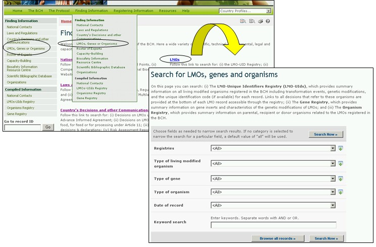

URL: http://bch.cbd.int/database/organisms/
The Secretariat maintains three registries in the BCH to assist users to access information regarding LMOs as follows:
-
LMO Registry;
-
Gene Registry
-
Organism Registry.
There are two options to access information from these three registries. It can either be searched through the single search interfaces available in the primary 'Finding Information' section or it can be accessed by browsing the relevant registry under the 'Compiled information' subsection.
Access to the compiled lists or the search interface are provided by links located in the Finding Information drop down menu on the navigation bar, or in the menu on the left side of the Finding Information page.

Figure 41